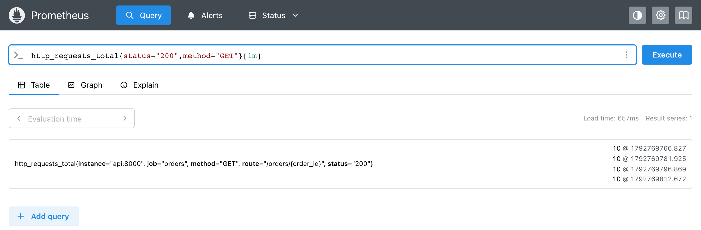
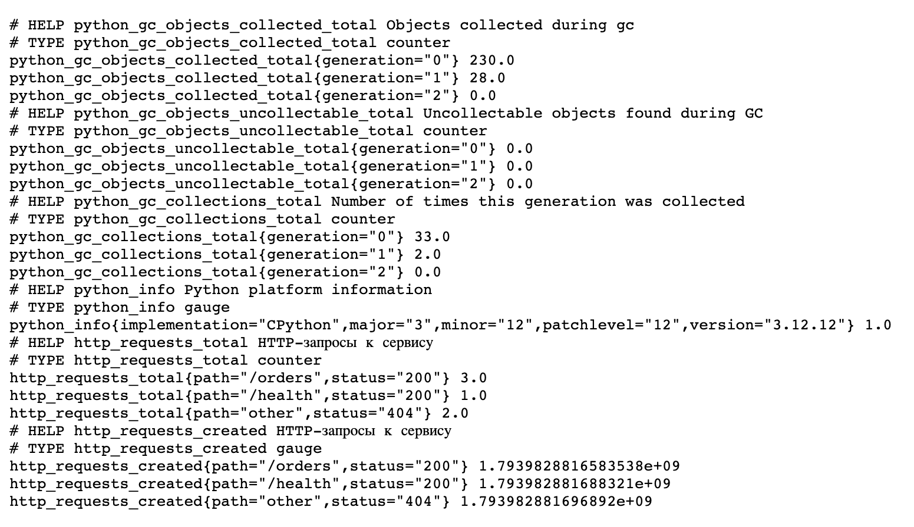

Метрикаmetric
Именованное число, которое программа сообщает о себе. Значение меняется со временем, и по его истории видно, как работает программа.
Примерorders_total — сколько заказов принято с момента запуска.
Гделекция 2.1
Метрики и наблюдаемость · часть 2 · метрики в коде
Лекция 2.4
Prometheus забирает метрики по сети. В лекции программа отдаёт счётчик по HTTP, мы проследим путь одного числа от inc() до графика и поставим счётчик в настоящий веб-сервис.
prometheus-client 0.26.0Лекция откроется по одному разделу: на экране одна мысль, кнопка «Дальше» ведёт к следующей. Стрелки ← → на клавиатуре тоже листают, Esc возвращает всю лекцию.
Как программа отвечает Prometheus на запрос /metrics.
Prometheus сам приходит к программе по адресу /metrics и забирает текст ответа. Функция start_http_server открывает такой адрес в фоне. Проверим его запросом из той же программы:
from urllib.request import urlopen from prometheus_client import CollectorRegistry, Counter, start_http_server registry = CollectorRegistry() orders = Counter("orders", "Принятые заказы", registry=registry) start_http_server(8000, registry=registry) orders.inc(7) answer = urlopen("http://localhost:8000/metrics").read().decode() print(answer)
# HELP orders_total Принятые заказы # TYPE orders_total counter orders_total 7.0
start_http_server(8000, registry=registry)Открывает порт 8000 и отвечает на запросы текстом из реестра. Сервер работает в отдельном потоке, поэтому программа сразу идёт дальше.urlopen("http://localhost:8000/metrics")Делает тот же запрос, что Prometheus при каждом опросе. .read() получает байты ответа.Прогон на живых данных. Запросим /metrics до запуска сервера, после запуска и после inc(7):
from urllib.request import urlopen
from prometheus_client import CollectorRegistry, Counter, start_http_server
registry = CollectorRegistry()
orders = Counter("orders", "Принятые заказы", registry=registry)
try:
urlopen("http://localhost:8000/metrics")
except OSError as error:
print("до start_http_server:", type(error).__name__)
start_http_server(8000, registry=registry)
line = [l for l in urlopen("http://localhost:8000/metrics").read().decode().splitlines() if l.startswith("orders_total")]
print("после start_http_server, до inc:", line)
orders.inc(7)
raw = urlopen("http://localhost:8000/metrics").read()
print("после inc(7):", [l for l in raw.decode().splitlines() if l.startswith("orders_total")], "| read() вернул", type(raw).__name__, len(raw), "байт")
до start_http_server: URLError после start_http_server, до inc: ['orders_total 0.0'] после inc(7): ['orders_total 7.0'] | read() вернул bytes 212 байт
| Строка | Что получилось на прогоне |
|---|---|
urlopen(...) до сервера | URLError: на порту 8000 никто не отвечает |
start_http_server(8000, …) | порт открыт, счётчик отдаётся со значением 0.0 |
orders.inc(7) | следующий запрос уже видит 7.0 — сервер читает значение в момент запроса |
.read() | 212 байт ответа |
На схеме — кто к кому обращается:
Стрелка 1 идёт от Prometheus к программе: запрос начинает Prometheus. Стрелка 2 возвращает ответ — тот же текст, что напечатала программа. В коде выше роль Prometheus сыграл urlopen. Такой порядок называют pull-моделью: данные забирает тот, кто их хранит.
Сервер строит текст заново при каждом запросе, поэтому значение в ответе всегда текущее. В настоящем сервисе start_http_server вызывают один раз при запуске, а inc() — там, где происходит событие.
Теперь проследим весь путь одного числа: от события в коде до графика.
Что происходит с одним событием от вызова inc() до точки на графике.
Разберём, как одно событие в коде доходит до графика. Пусть в сервисе уже было 6 заказов и пришёл седьмой.
inc() меняет число в памяти процесса. По сети пока ничего не уходит.Число 7 уже лежит в памяти, а в базе Prometheus его ещё нет. Оно попадёт туда при следующем опросе.
GET /metrics.Запрос пришёл на порт 8000, который открыл start_http_server. Программа на него отвечает.
start_http_server собирает текст из реестра в момент запроса и отправляет его в ответе.Prometheus получил текст и достал из строки значение 7.0. Теперь его нужно сохранить.
В базе теперь два отсчёта одного ряда. По ним уже можно посчитать рост.
Отсчёты в базе можно увидеть в интерфейсе Prometheus. Запрос с окном [1m] возвращает все отсчёты ряда за последнюю минуту. Кадр снят на стенде сервиса заказов:

http_requests_total за минуту: значение, знак @ и момент опроса.Каждая строка справа — один отсчёт: 10 — значение, после знака @ — момент опроса в секундах с 1 января 1970 года. Моменты идут примерно через 15 секунд — это интервал опроса стенда. Значение во всех четырёх отсчётах 10: за эту минуту новых запросов не было.
На шаге 5 функция роста берёт отсчёты 6.0 и 7.0 и показывает рост на один заказ. Программа участвует только в первых трёх шагах: держит число в памяти и отдаёт его по запросу. Хранение истории и графики — работа Prometheus.
Во всех примерах до сих пор события создавал цикл. Посмотрим на счётчик в настоящем веб-сервисе.
Где стоит счётчик в настоящем сервисе и как увидеть его в браузере.
В настоящем сервисе событие — это запрос пользователя. Ниже небольшой веб-сервис на встроенном модуле http.server, без дополнительных пакетов. Он отвечает на адреса /orders и /health, а на остальные отвечает «не найдено». Счётчик считает запросы по адресу и коду ответа.
from http.server import BaseHTTPRequestHandler, HTTPServer from prometheus_client import Counter, start_http_server REQUESTS = Counter("http_requests", "HTTP-запросы к сервису", ["path", "status"]) KNOWN_PATHS = {"/orders", "/health"} class Handler(BaseHTTPRequestHandler): def do_GET(self): status = 200 if self.path in KNOWN_PATHS else 404 self.send_response(status) self.end_headers() self.wfile.write(b"ok\n" if status == 200 else b"not found\n") path = self.path if self.path in KNOWN_PATHS else "other" REQUESTS.labels(path=path, status=str(status)).inc() def log_message(self, *args): # не печатать каждый запрос в терминал pass start_http_server(8000) # метрики: http://localhost:8000/metrics HTTPServer(("", 8080), Handler).serve_forever() # сервис: http://localhost:8080
REQUESTS = Counter(..., ["path", "status"])Счётчик создан один раз, на уровне модуля: обработчик только прибавляет к нему. Две метки: адрес и код ответа. Реестр здесь общий, библиотечный: так обычно и делают в сервисе.path = ... else "other"Все неизвестные адреса попадают в одно значение other. Если записывать в метку любой адрес из запроса, каждый новый адрес создаст новый ряд (лекция 2.3, §1).REQUESTS.labels(...).inc()Стоит в конце обработчика, когда код ответа уже известен.start_http_server(8000)Открывает порт 8000 для Prometheus. Сам сервис слушает порт 8080.serve_forever()Обрабатывает запросы, пока программу не остановят.У программы два порта с разными ролями. На схеме — кто к какому порту обращается:
Запросы пользователей приходят на порт 8080 и проходят через обработчик. Обработчик прибавляет к счётчику в памяти. Prometheus и браузер читают метрики с другого порта, 8000. Отправим шесть запросов из второго терминала, пока сервис работает в первом:
for p in /orders /orders /orders /health /admin /favicon.ico; do
curl -s -o /dev/null -w "$p %{http_code}\n" localhost:8080$p
done
/orders 200 /orders 200 /orders 200 /health 200 /admin 404 /favicon.ico 404
Откроем http://localhost:8000/metrics в браузере:

/metrics сервиса после шести запросов.В начале ответа — метрики, которые библиотека добавляет в общий реестр сама: python_gc_* о сборке мусора и python_info с версией Python. Ниже — наш счётчик и три его ряда. Три запроса к /orders дали 3.0, один к /health — 1.0. Запросы к /admin и /favicon.ico собраны в один ряд path="other" со значением 2.0. Последние строки — http_requests_created из лекции 2.2, §2.
Прогон на живых данных. Чтобы увидеть, что делает каждая строка обработчика, добавим в конец do_GET печать и повторим те же шесть запросов:
print(f"self.path={self.path:<13} status={status} метка path={path:<8} "
f"значение ряда → {REQUESTS.labels(path=path, status=str(status))._value.get()}", flush=True)
self.path=/orders status=200 метка path=/orders значение ряда → 1.0
self.path=/orders status=200 метка path=/orders значение ряда → 2.0
self.path=/orders status=200 метка path=/orders значение ряда → 3.0
self.path=/health status=200 метка path=/health значение ряда → 1.0
self.path=/admin status=404 метка path=other значение ряда → 1.0
self.path=/favicon.ico status=404 метка path=other значение ряда → 2.0
http_requests_total{path="/orders",status="200"} 3.0
http_requests_total{path="/health",status="200"} 1.0
http_requests_total{path="other",status="404"} 2.0| Строка | Что получилось на прогоне |
|---|---|
status = 200 if … else 404 | /admin и /favicon.ico → 404 |
path = … else "other" | оба неизвестных адреса → метка other |
REQUESTS.labels(...).inc() | ряд other, 404: 1.0 после /admin, 2.0 после /favicon.ico |
_value.get() — внутреннее значение ряда; в рабочем коде его не используют, здесь оно нужно только для печати. Шесть запросов дали три ряда, и значения рядов совпали с ответом /metrics.
В сервисе счётчик создают на уровне модуля, а inc() ставят в обработчик — туда, где уже известен результат запроса.
Prometheus приходит за таким ответом регулярно и сохраняет каждое значение. Разберём, что по этим значениям можно узнать.
Что пишут неправильно и как исправить.
| Что написано | Что произойдёт | Как правильно |
|---|---|---|
start_http_server не вызван | порт 8000 закрыт, опрос Prometheus завершается ошибкой | вызвать start_http_server один раз при запуске |
labels(path=self.path) | каждый новый адрес из запроса создаёт новый ряд | неизвестные адреса записывать в other |
Задача на то, что разобрано в лекции. Решение спрятано под задачей.
Ситуация:
/status;/nope;Изменить одну строку сервиса так, чтобы /status отвечал 200 и считался своим рядом. Назвать ряды счётчика в ответе /metrics после трёх запросов.
KNOWN_PATHS = {"/orders", "/health", "/status"}http_requests_total{path="/status",status="200"} 2.0
http_requests_total{path="other",status="404"} 1.0Адрес /status попал в набор известных адресов, поэтому он отвечает 200 и записывается в метку как есть. Запрос к /nope ушёл в ряд other. Рядов для /orders и /health нет: после перезапуска к ним не было запросов.
Вопросы по лекции. Ответ раскрывается щелчком.
/metrics: программа или Prometheus?Prometheus. Программа только отвечает на запрос — это pull-модель.
В базе Prometheus, отсчётами. Программа держит в памяти только текущее значение.
/admin и /favicon.ico попали в один ряд?Оба адреса не входят в KNOWN_PATHS, и сервис записывает в метку path значение other.
Конструкции лекции одним списком.
start_http_server(8000)urlopen("http://localhost:8000/metrics")path = p if p in KNOWN else "other"Термины лекции, включая введённые раньше: формулировка, пример и рисунок.
Именованное число, которое программа сообщает о себе. Значение меняется со временем, и по его истории видно, как работает программа.
Примерorders_total — сколько заказов принято с момента запуска.
Гделекция 2.1
Система мониторинга. Через равные промежутки запрашивает метрики у программ и хранит каждое полученное значение с отметкой времени.
Примерраз в 15 секунд забирает /metrics у сервиса заказов.
Гделекции 2.1, 2.4
Текст, который программа отдаёт по адресу /metrics. Для каждой метрики в нём описание (# HELP), тип (# TYPE) и строки «имя значение».
Примерorders_total 3.0 — последняя строка ответа из §2.
Гделекция 2.2, §2; лекция 2.4, §1
Способ сбора метрик, при котором запрос начинает тот, кто хранит данные. Prometheus сам приходит к программе за ответом /metrics, программа только отвечает.
ПримерPrometheus раз в 15 секунд запрашивает localhost:8000/metrics.
Гделекция 2.4, §1
Один запрос Prometheus к /metrics программы. Опросы повторяются через равные промежутки — интервал опроса.
Примеринтервал 15 секунд: опросы в 15:04:58, 15:05:13, 15:05:28.
Гделекция 2.5, §2
Одно значение метрики, полученное при опросе, вместе с моментом опроса.
Примерв 15:04:58 счётчик был равен 40.
Гделекция 2.4, §2; лекция 2.5, §2
Все отсчёты одной метрики с одним набором значений меток, выстроенные по времени. Одна строка ответа /metrics даёт при каждом опросе один отсчёт своего ряда.
Примерorders_total{status="paid"} — один ряд, {status="cancelled"} — другой.
Гделекция 2.3, §1
Пара «имя = значение», которая уточняет, к чему относится число. Метрика с разными значениями метки делится на разные ряды.
Примерstatus="paid" и status="cancelled" делят счётчик заказов на два ряда.
Гделекция 2.3, §1–§3
Список метрик программы. Из него строится текст ответа /metrics: в ответ попадают все метрики реестра.
Примерregistry = CollectorRegistry(); Counter(..., registry=registry).
Гделекция 2.2, §2; лекция 2.6, §2
Метрика, значение которой с момента запуска программы только растёт. Каждое событие прибавляет к ней число.
Примерпринятые заказы, ошибки оплаты, отправленные байты.
Гделекция 2.2, §1–§4
Prometheus сам приходит к программе за ответом /metrics — это pull-модель. Программа держит в памяти текущее значение и отдаёт его через start_http_server, а историю отсчётов хранит Prometheus. В сервисе счётчик создают на уровне модуля и прибавляют в обработчике запроса, а неизвестные значения меток сводят в одно.